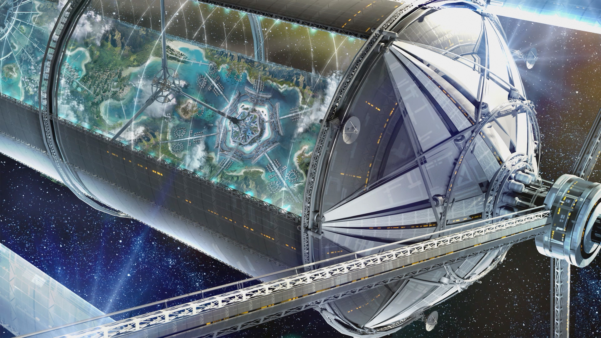
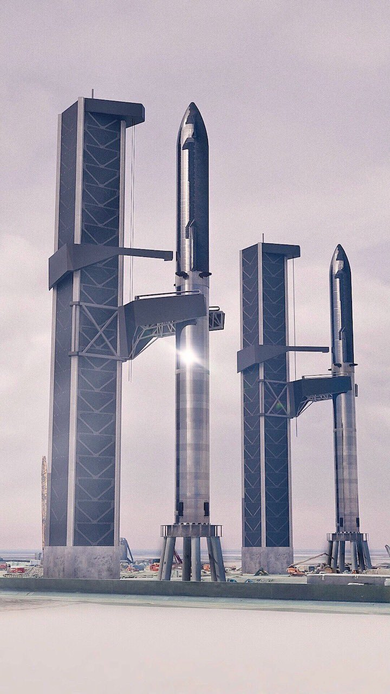

Theis page is about the new space race. Unlike the previous space race thayt started in the late 1950's and lasted for four decades, between the worls only two SUPER POWERS, The USA and Russia. The 21st centurys space race is between individual companies. There are many players in this race but there are 3 playing in the pro's! Those three are SpaceX, Blue Orgin and Virgin Galactic. They share some attributes but have wildly different visions for the future. Below I will give you a run down of each of their visions for the future.
The Different Space Crafts
Fig.1 - Virgin Galactic's Spaceship Two.Fig.2- Picture of SpaceX's Starship SN9.Fig.3- Picture of two of SpaceX's Falcon Rockets landing on pad at the same time!Fig.4- Picture of Blue Orgin's rocket on the landing pad.
The Visions of The Visionaries!
Virgin Galactic
While all three of these companies and their respective CEO/Founder's have wildly different visions for their private space endeavors. They do share a few major goals, the exspansion of the human race and making space flight available to the average person. They plan on doing this by making parts reusable. All three companies rockets are reusable which is a major hurdle in lowering the cost of space flight!
Virgin Galactic founded by Sir Richard Bronson is more of space tourism company that flies customers to low Earth orbit for about 10 minutes at a time. Giving customers the feel of Zero-G and amazing views!
Blue Orgin
Blue Orgin was founded by Jezz Bezos. Jeff Bezos has a vision for the future that differs from Elon Musk in one major way, Blue Orgin wants top put humans in orbit around Earth. In large man made space stations that are the size of large cities. He believes that we will have a better chance of survival if we are located near are home.
To start this process Blue Orgins has a proposed plan to build a privately owned space station by 2028.

Fig.A - Image of Blue Orgin's proposed space colony.Fig.B - Image of Blue Orgin's proposed space station.
SpaceX
SpaceX was founed by Elon Musk, the founder of Tesla and co-founder of PayPal. SpaceX's mission is to colonize Mars. They were the first to land a rocket back on Earth after flight, dramitcally slashing the cost of space flight. They now seem to do it with relative ease. They currently preform multiple flights a year with their falcon rocket. They have multiple government and civilian contracts, one for sending NASA astronauts to the I.S.S. currently orbiting the planet at roughly 250 miles above the surface of Earth.
With the success of the Falcon, SpaceX has moved on to it's next rocket dubbed Starship. Starship is the largest rocket ever constructed. Starship stands at 400 feet when stacked on top of the first stage of the Starship System. The space ship has a payload size of 220,000 pounds and by can fill 39,000 cubic feet in volume. Designed to take up to 100 people to Mars. The ship is also capable of flight to ANYWHERE on the planet in one hour!
Elon Mudk has a plan to start a colony on Mars and the Moon. With Starship this is very possible. Musk belives that in order for the human race to survive we must become a two planet civilization and a space faring people.

Fig.1 - Picture of Starship and grab arm landing system.